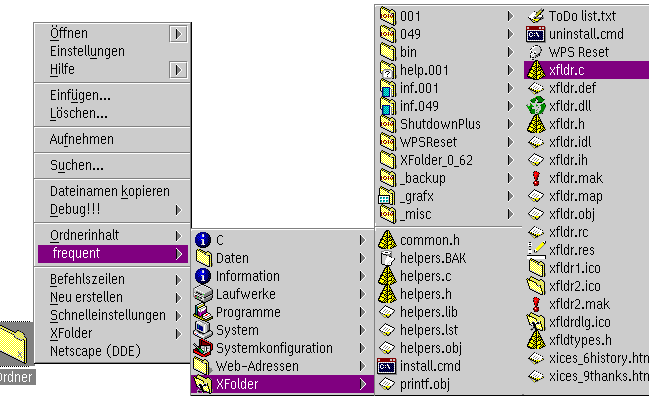

Here's an example (the "XFolder" development directory from the author's harddisk):

As you can see, the content of the "XFolder" folder is displayed; the subfolders in this folders lead to subsequent submenus.
The "Folder content" menus behave just like the &warpcenter;'s do: if you click on an item, its default view will be opened. If you click on a folder menu item, another submenu with the contents of this folder will be opened; if you click on it with mouse button 2, the WPS folder will be opened as a window instead.
The "Folder content" functions are used in two different contexts:
In the above screenshot, this can be seen with the "Ordnerinhalt" menu item (which is German for "Folder content"; sorry, I was just too lazy to do a second screenshot).
The folder content menus can be switched on and off on the "Context menus" page
in the new
"Workplace Shell" object.
In the above screenshot, the "frequent" menu item is a folder on my Desktop in which I put things I access frequently. I have declared this folder to be my only "favorite" folder, so everything I put in this folder will appear in all context menus.